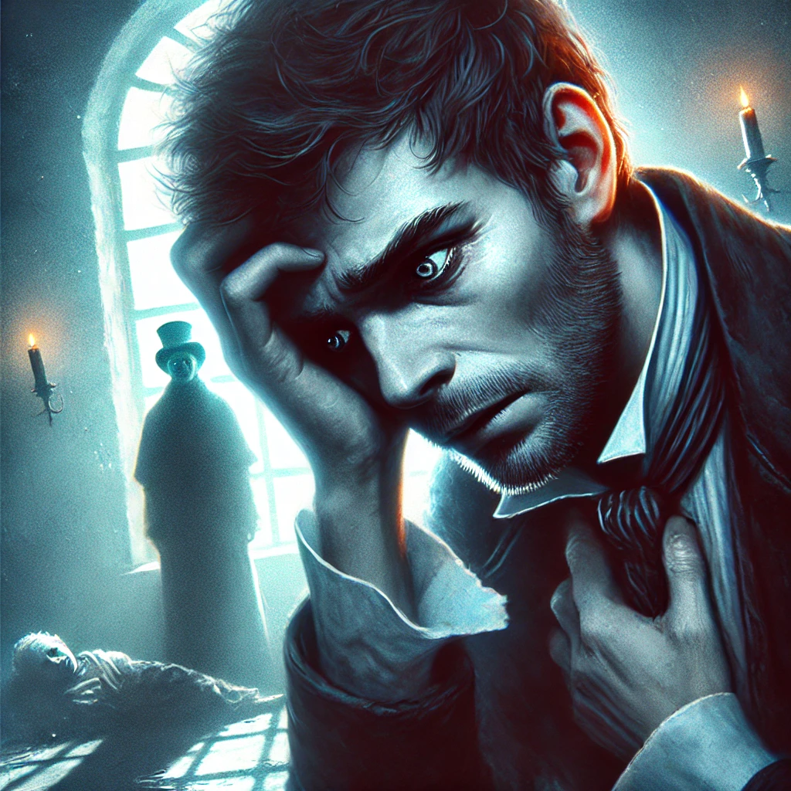

죄와 벌
목차
작가
도스토옙스키
출판일
1866년
감상평에 대한 AI그림
주인공 라스콜리니코프는 가난한 대학생으로, 돈을 위해 그리고 자신이 비범인인지 시험하기 위해 고리대금업자인 노파를 죽이려고 마음먹는다. 하지만 노파를 죽이는 과정에서 노파의 여동생이 이를 목격하게 되고 그는 목격자를 남기지 않기 위해 노파의 여동생 역시 살해하고 만다. 그는 자신이 특별한 인간, 즉 비범인 이라며 살인을 저질러도 정당화될 수 있다고 믿지만, 범행 후 극심한 죄책감과 불안에 시달린다. 수사망이 조여오고, 그는 점점 정신적으로 몰려가며 스스로 고통받는다. 결국 소냐라는 여인의 도움을 받아 자신의 죄를 인정하고 경찰에 자수하며, 시베리아 유형지에서 속죄의 길을 걷게 된다.

감상평에 대한 AI평가
~~~~AI평가~~~~~
✨ 네가 작성한 『죄와 벌』 독서록은 이야기의 핵심적인 흐름을 명확하게 정리하고 있어. 주인공 라스콜리니코프가 범죄를 저지르고, 죄책감에 시달리며 결국 자수하는 과정이 일목요연하게 정리되어 있어서 책을 읽지 않은 사람도 내용을 쉽게 이해할 수 있어
✨ 특히, 주인공이 어떤 인물인지 그리고 그가 어떤 선택을 했는지가 잘 드러나도록 서술한 점이 좋았어. 또한, 단순한 사건 나열이 아니라 "극심한 죄책감과 불안"이라는 표현을 사용해 그의 심리적 고통까지 묘사한 점도 인상적이야
✨ 하지만 조금 더 보완할 부분도 있어. 예를 들어, 라스콜리니코프가 왜 그런 극단적인 신념을 가지게 되었는지, 그리고 소냐라는 인물이 그의 변화에 어떤 영향을 미쳤는지를 조금 더 풀어쓴다면 이야기가 더 깊이 있게 전달될 거야. 마지막에 시베리아 유형지에서 ‘속죄의 길을 걷게 된다’고 했는데, 그 과정에서 그의 심리 변화나 희망의 가능성이 어떻게 나타나는지 한두 문장만 덧붙이면 더욱 풍부한 독서록이 될 것 같아. 전체적으로 이야기의 흐름을 명확하게 전달한 좋은 독서록이야! 여기에 네 생각이나 좀 더 세부적인 요소를 추가하면 더욱 완성도 높은 글이 될 것 같아. 😊